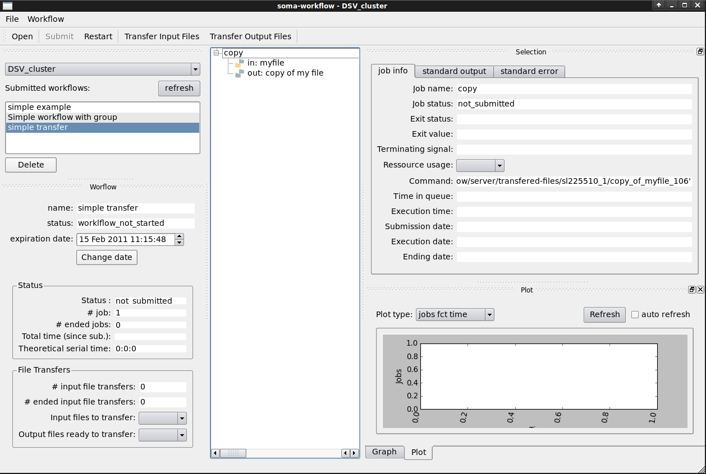
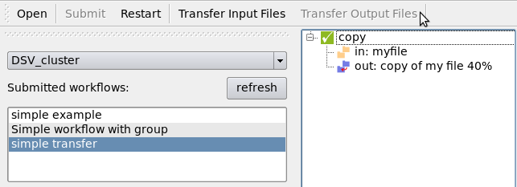
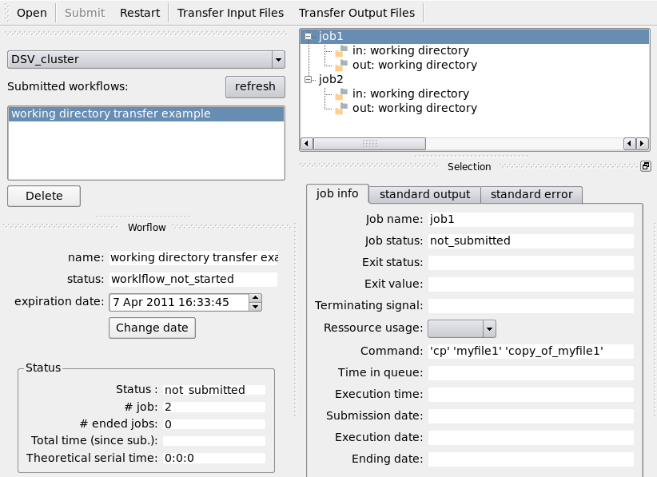
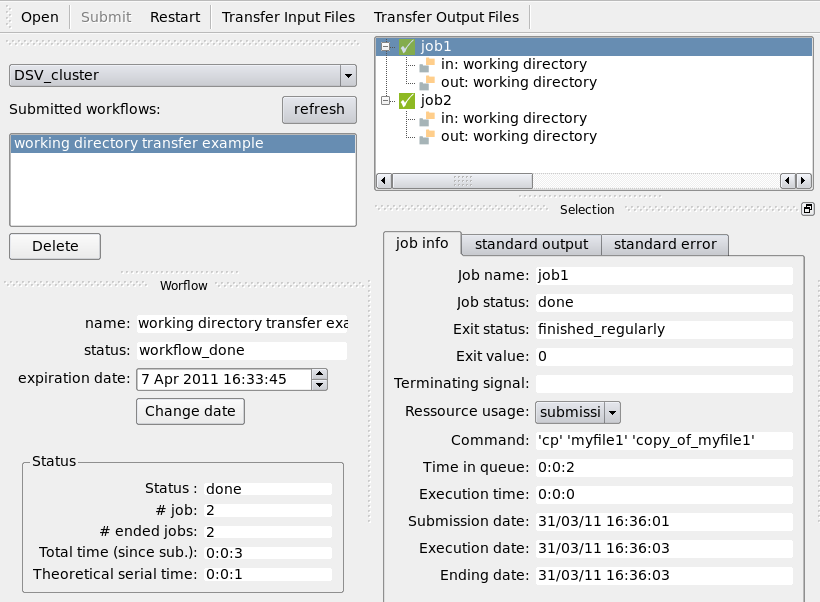

Examples¶
You will find here a set of examples. The objective is to illustrate how to build simple to more complex workflows and submit them to soma-workflow.
- The content of the jobs is not relevant here:
The “sleep” command was used in the examples to stand for any job.
The “cp” command was used in the examples to stand for a job reading a file and writing another file.
However, the job examples were chosen to enable anyone to copy the examples and run them directly on his machine:
Simple workflows¶
Basic example¶
{kind=link}
Simple example: 4 jobs with dependencies.¶
from soma_workflow.client import Job, Workflow, Helper
# create the workflow:
job_1 = Job(command=["sleep", "60"], name="job 1")
job_2 = Job(command=["sleep", "60"], name="job 2")
job_3 = Job(command=["sleep", "60"], name="job 3")
job_4 = Job(command=["sleep", "60"], name="job 4")
jobs = [job_1, job_2, job_3, job_4]
dependencies = [(job_1, job_2),
(job_1, job_3),
(job_2, job_4),
(job_3, job_4)]
workflow = Workflow(jobs=jobs,
dependencies=dependencies)
# save the workflow into a file
Helper.serialize("/tmp/workflow_example", workflow)
Run the Python script, then open the GUI (command: “soma_workflow_gui”).
- In the GUI, you can now:
Open the workflow file.
Submit the workflow to the computing resource of your choice.
Monitor the workflow execution:
{kind=link}
See also
The workflow creation API for a full description of job and workflow options.
Workflow with Group¶
Creating groups can be useful to organize jobs within workflows for displaying purpose. Groups do not have any impact on the execution of workflows.
{kind=link}
Simple example with a group: 30 jobs are in the group “my 30 jobs”.¶
from soma_workflow.client import Job, Workflow, Group, Helper
# create the workflow:
jobs = []
dependencies = []
group_elements = []
first_job = Job(command=["sleep", "10"], name="first job")
last_job = Job(command=["sleep", "10"], name="last job")
jobs.append(first_job)
jobs.append(last_job)
for i in range(0, 30):
job = Job(command=["sleep", "60"], name="job " + repr(i))
jobs.append(job)
dependencies.append((first_job, job))
dependencies.append((job, last_job))
group_elements.append(job)
thirty_jobs_group = Group(elements=group_elements,
name="my 30 jobs")
workflow = Workflow(jobs=jobs,
dependencies= dependencies,
root_group=[first_job, thirty_jobs_group, last_job])
# save the workflow into a file
Helper.serialize("/tmp/workflow_example", workflow)
Run the Python script, then open the GUI (command: “soma_workflow_gui”) to open, submit and monitor your workflow:
{kind=link}
The 30 jobs within the group can be extended (visible) or collapsed (hidden).
Go further with the client-server mode¶
When the computing resource you want to use is configured in the mono process mode (this is the case if you use your multi core machine without special configuration), all the workflows must run in a single session and the workflow executions are stopped when this session is closed. In this case, it is thus safer to save the workflows into files and submit them through the same GUI you will use to monitor the execution (the workflows will be stopped if you close the GUI).
The client-server mode is much more flexible. When you want to submit a workflow to a computing resource configured in the client-server mode (remote cluster for example), you can submit it directly to the computing resource in the Python script instead of saving the workflow into a file:
from soma_workflow.client import WorkflowController
# workflow creation as described in the examples
# no need to save the workflow into a file
# submit the workflow to computing resource (configured in the client-server mode)
controller = WorkflowController("Titan", login, password)
controller.submit_workflow(workflow=workflow,
name="simple example")
You can now close and open the GUI at any time and even shut down you computer. It will not interrupt the workflow execution.
Workflows with FileTransfer¶
The file transfers are optional. However, they can be useful if you use a remote computing resource and there is no shared file system between your machine and the computing resource (see File Transfer).
These examples show how to create workflows managing file transfers.
Note
An easy way to deal with file transfers is to transfer a working directory and work with relative paths (see Another basic file transfer).
Basic file transfer¶
To run this example, create first the file “/tmp/soma_workflow_examples/myfile” with any content. It will stand for an input file to transfer. Although the job is executed on the computing resource it appears that the command is running on the local files, this is of course not the case. For another example of file transfer without the gui go to the next section.
from soma_workflow.client import Job, Workflow, WorkflowController, FileTransfer
# FileTransfer creation for input files
myfile = FileTransfer(is_input=True,
client_path="/tmp/soma_workflow_examples/myfile",
name="myfile")
# FileTransfer creation for output files
copy_of_myfile = FileTransfer(is_input=False,
client_path="/tmp/soma_workflow_examples/copy_of_myfile",
name="copy of my file")
# Job and Workflow
copy_job = Job(command=["cp", myfile, copy_of_myfile],
name="copy",
referenced_input_files=[myfile],
referenced_output_files=[copy_of_myfile])
workflow = Workflow(jobs=[copy_job],
dependencies=[])
# submit the workflow
controller = WorkflowController("Titan", login, password)
controller.submit_workflow(workflow=workflow,
name="simple transfer")
Run the Python script and open the GUI:
{kind=link}
Transfer the input files using the “Transfer Input Files” button:

The job will start as soon as the transfers ended:

When the workflow is done, transfer the output files using the “Transfer Output Files” button:
{kind=link}
The progression and the end of the transfer are visible in the GUI.

See also
Another basic file transfer¶
For this example we use a dummy program that will create a file on the computing resource:
import sys
if __name__ == "__main__":
if len(sys.argv) == 2:
output_file = sys.argv[1]
f = open(output_file, 'w')
f.write("a very original message: Hello world!")
f.close()
it takes, as input, the name of the file that it creates.
Here is the program:
from soma_workflow.client import Job, Workflow, WorkflowController, Helper, FileTransfer
controller = WorkflowController("Gabriel", "mb253889")
# FileTransfer creation for input files
file1 = FileTransfer(is_input=True,
client_path="/home/mb253889/create_file.py",
name="script")
file2 = FileTransfer(is_input=True,
client_path="/home/mb253889/output_file",
name="file created on the server")
# Job and Workflow
run_script = Job(command=["python", file1, file2],
name="copy",
referenced_input_files=[file1],
referenced_output_files=[file2])
workflow = Workflow(jobs=[run_script],
dependencies=[])
workflow_id = controller.submit_workflow(workflow=workflow,
name="Simple transfer")
# You may use the gui or manually transfer the files:
manual = True
if manual:
Helper.transfer_input_files(workflow_id, controller)
Helper.wait_workflow(workflow_id, controller)
Helper.transfer_output_files(workflow_id, controller)
print("Finished !!!")
Easy, isn’t it?
Working directory transfer¶
An easy way to work with file transfers is to transfer a working directory containing all the files you need and then use only relative file paths in your jobs.
In this example, the working directory contains 2 files: myfile1 and myfile2. The workflow contains 2 jobs which will modify the working directory.
from soma_workflow.client import Job, Workflow, WorkflowController, FileTransfer
# Creation of the FileTransfer object to transfer the working directory
my_working_directory = FileTransfer(is_input=True,
client_path="/tmp/my_working_directory",
name="working directory")
# Jobs and Workflow
# Do not forget to set the working_directory argument when creating the jobs
job1 = Job(command=["cp", "myfile1" , "copy_of_myfile1"],
name="job1",
referenced_input_files=[my_working_directory],
referenced_output_files=[my_working_directory],
working_directory=my_working_directory)
job2 = Job(command=["cp", "myfile2" , "copy_of_myfile2"],
name="job2",
referenced_input_files=[my_working_directory],
referenced_output_files=[my_working_directory],
working_directory=my_working_directory)
workflow = Workflow(jobs=[job1, job2],
dependencies=[])
# submit the workflow
controller = WorkflowController("Titan", login, password)
controller.submit_workflow(workflow=workflow,
name="working directory transfer example")
Run the Python script and monitor the execution of the workflow using the GUI (soma_workflow_gui command):
{kind=link}
Transfer the working directory to the computing resource using the “Transfer Input Files” button and wait for the jobs to execute:
{kind=link}
Transfer the working directory back using the “Transfer Output Files” button:

The working directory on your machine should now contains the files: myfile1, myfile2, copy_of_myfile1 and copy_of_myfile2.